Tours por Departamento
Descubre los mejores tours de Bolivia, organizados por departamento. Elige tu destino y vive una experiencia inolvidable.
La Paz
La Paz te ofrece tours de aventura, cultura y naturaleza en el corazón de los Andes.

Lago Titicaca
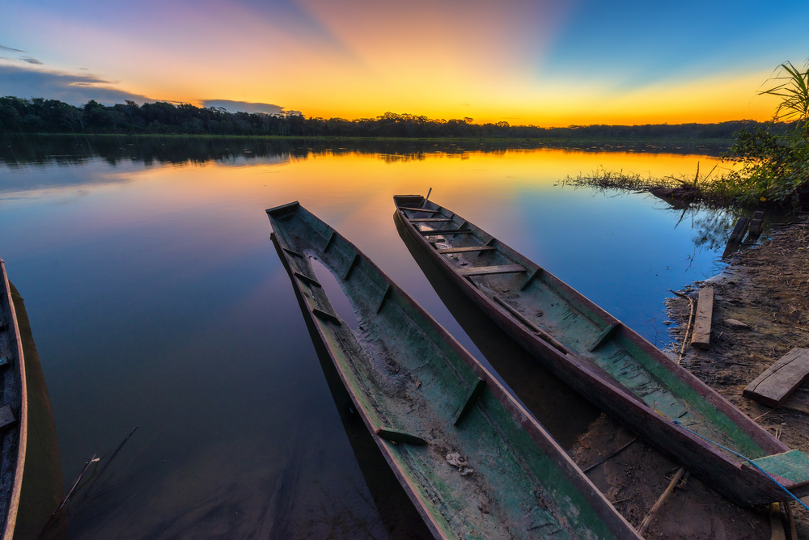
Parque Madidi

Valle de la Luna
Cochabamba
Disfruta de tours culturales, naturales y gastronómicos en la ciudad de la eterna primavera.

Cristo de la Concordia
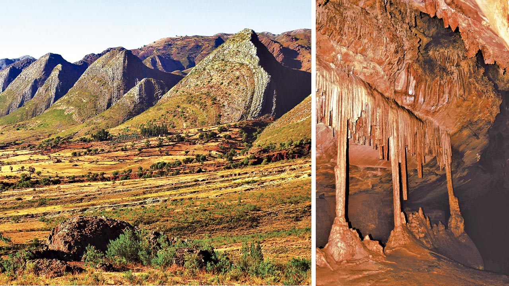
Toro Toro
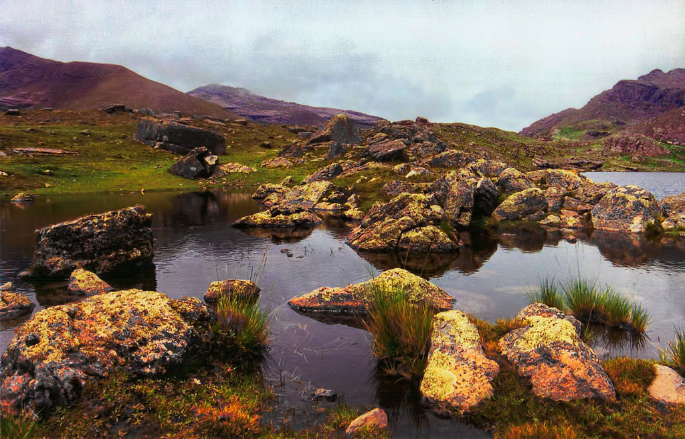
Parque Tunari
Oruro
Vive la cultura y la naturaleza altiplánica con tours únicos en Oruro.
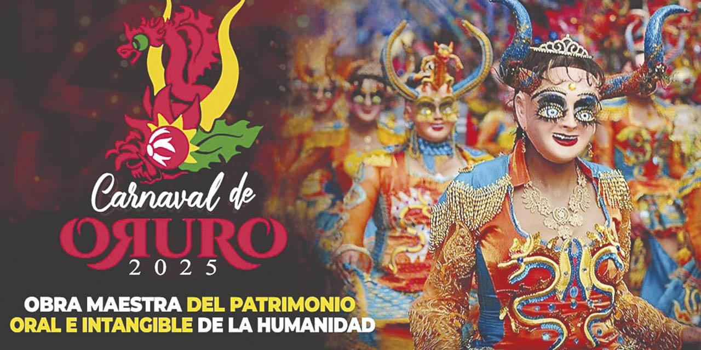
Carnaval de Oruro
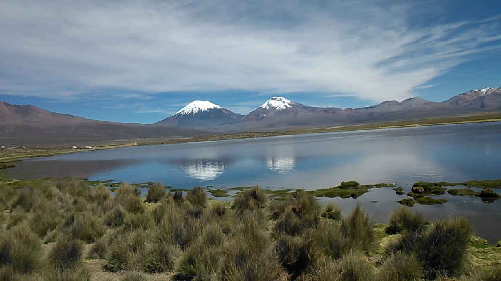
Parque Sajama
Potosí
Descubre la historia y los paisajes de Potosí con tours a sus principales atractivos.
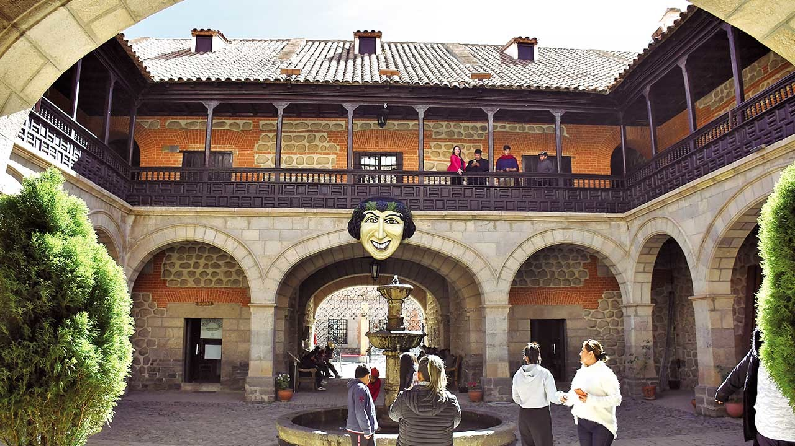
Casa de la Moneda

Salar de Uyuni
Sucre
La capital constitucional de Bolivia, con tours históricos y culturales únicos.

Casa de la Libertad
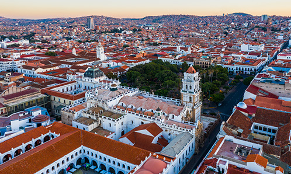
Sucre
Santa Cruz
Explora la biodiversidad y cultura de Santa Cruz con tours a sus principales destinos.
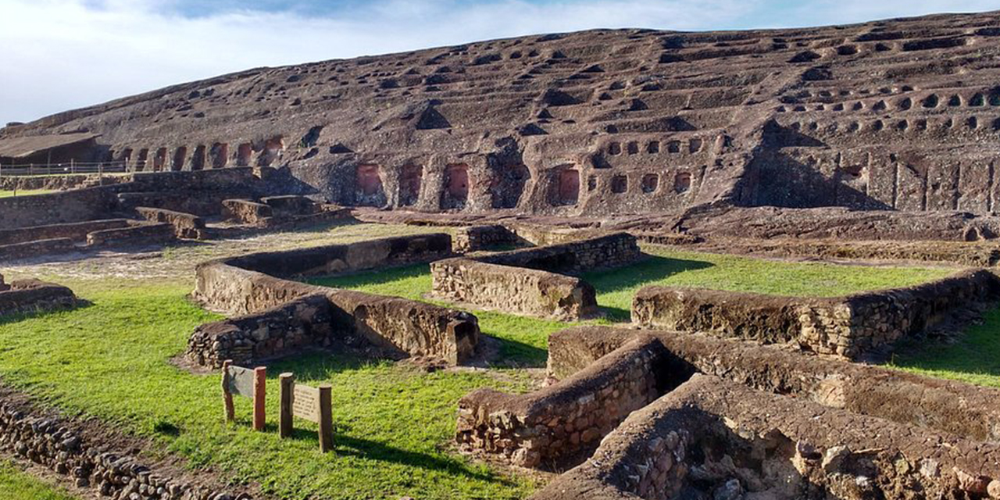
Fuerte de Samaipata

Parque Amboró
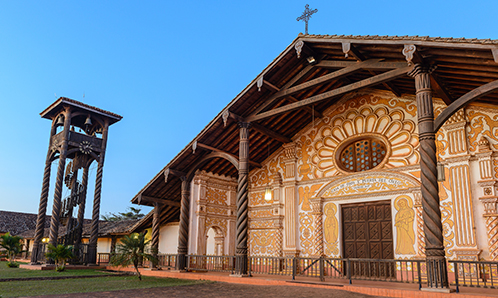
Misiones Jesuíticas de Chiquitos
Beni
Beni es naturaleza pura, ríos, selva y cultura amazónica. Un destino ideal para el ecoturismo y la aventura.

Pesca Deportiva
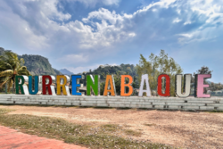
Rurrenabaque
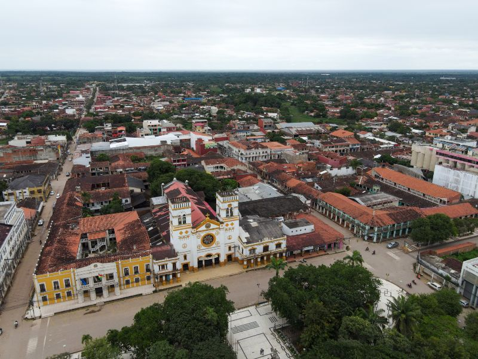
Trinidad
Pando
Pando es la puerta de entrada a la Amazonía boliviana, con paisajes selváticos y ríos caudalosos.
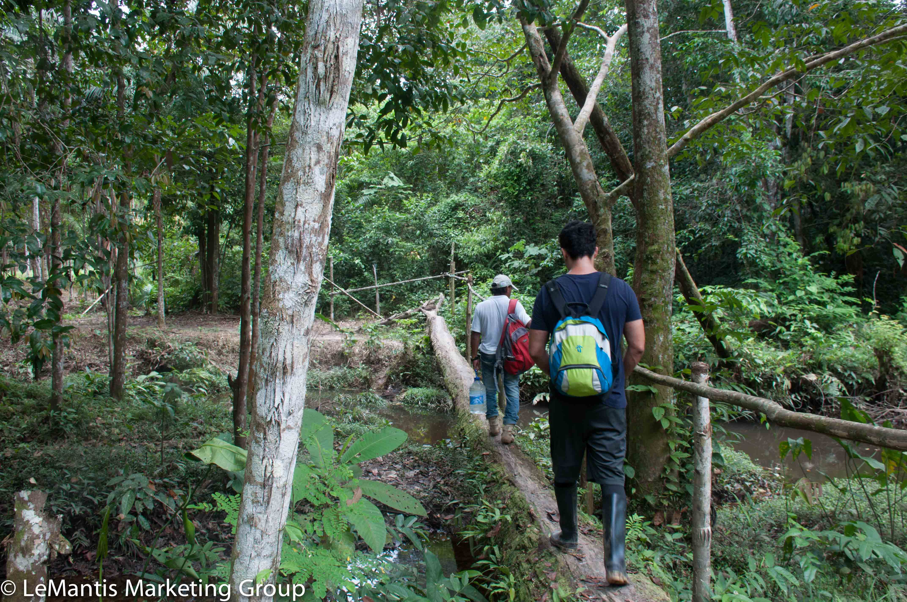
Ecoturismo Amazonas
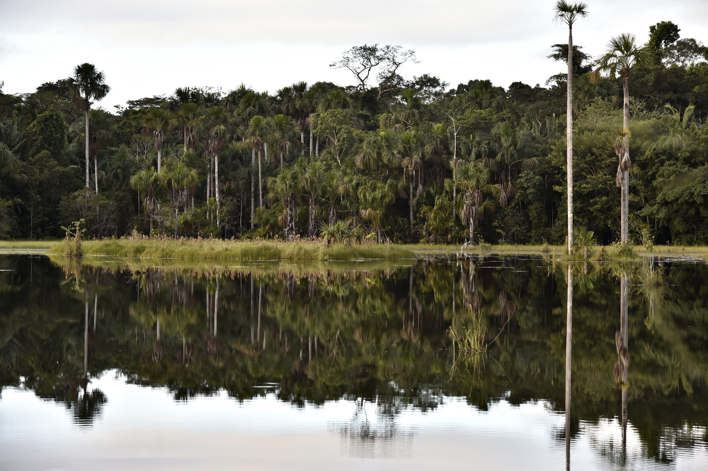
Navegación Río Manuripi
Tarija
Descubre los valles y la cultura de Tarija con tours a sus principales atractivos.
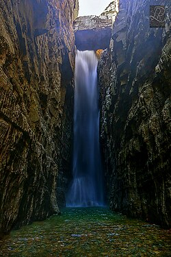
Cordillera de Sama
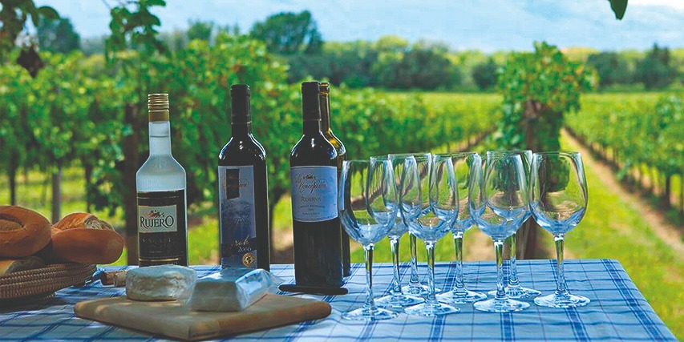
Ruta del Vino
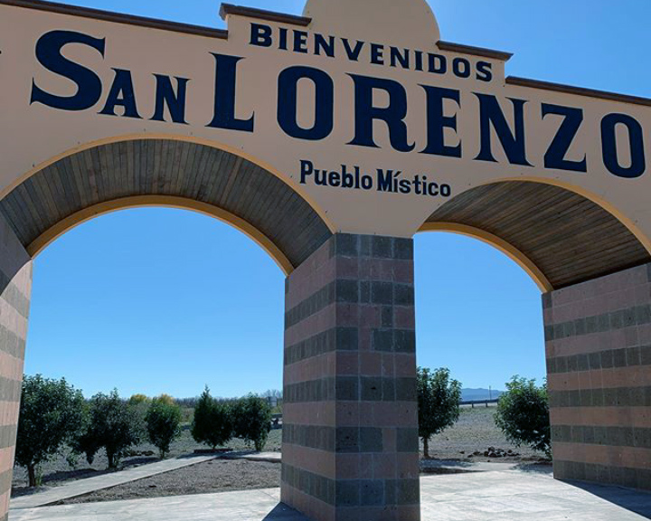